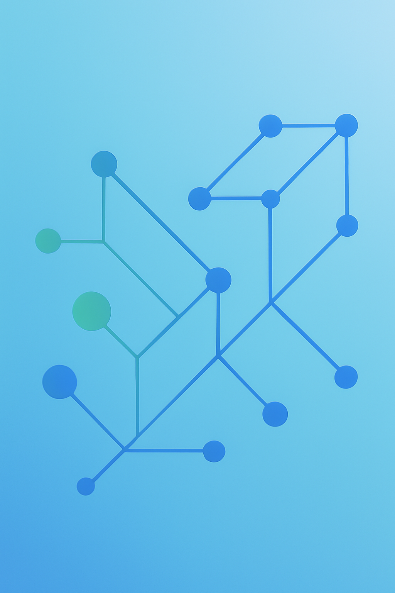

Fairness vs. Robustness
Does making a model adversarially robust also make it fair? We challenge this assumption — and find the answer is more complicated than it seems.
Project Overview
A common intuition in ML safety is that adversarially robust models should also be fairer — after all, if a model is harder to fool, it should rely on genuine features rather than spurious correlations tied to sensitive attributes like gender or background context. This project puts that intuition to the test.
We evaluate a suite of standard and adversarially trained vision models across benchmarks measuring both adversarial robustness and group fairness. Our central finding: robustness and fairness are distinct axes, and optimising for one does not reliably improve the other.
Motivation
Adversarial training — exposing a model to worst-case perturbations during training — is the de-facto method for improving robustness. It encourages models to learn features that are stable under small input changes. At the same time, biased models often latch onto unstable shortcut features (e.g., background textures, co-occurrence statistics). So one might hope that adversarial training implicitly reduces bias as a side effect.
But adversarial training optimises for average-case worst-case robustness across the whole dataset. It says nothing about whether that robustness is distributed equitably across demographic groups or classes. A model can become globally more robust while becoming less robust — and less accurate — for minority or underrepresented groups.

Illustration of the divergence between average robustness and group-level fairness.
Experimental Setup
We evaluate models trained with standard empirical risk minimisation alongside adversarially trained counterparts (PGD-AT and TRADES) on ImageNet variants and background-augmented benchmarks. Fairness is measured via class-wise accuracy gaps and worst-group accuracy — metrics that surface whether robustness gains are spread evenly or concentrated on already-easy classes.
- Models: Standard, PGD-AT, and TRADES trained ResNets at multiple perturbation budgets (ε = 2/255, 4/255, 8/255).
- Robustness metrics: Average clean accuracy and average robust accuracy under PGD-50 attack.
- Fairness metrics: Per-class robust accuracy, worst-class robust accuracy, and the class-wise robustness gap (best class minus worst class).
- Bias probes: Background Challenge (IN-9) and spurious-correlation splits to measure reliance on non-causal features.
Key Findings
- Adversarial training widens class-wise accuracy gaps. While overall robust accuracy improves, the gap between best- and worst-performing classes grows. Easy classes become more robust; hard or minority classes often stagnate or regress.
- Robust models retain background bias. Adversarially trained models still rely heavily on background context for classification — the robustness guarantee applies to ℓ∞ perturbations, not to the semantic spurious correlations that drive unfairness.
- Accuracy–robustness–fairness is a three-way trade-off. Achieving strong average robustness consistently comes at the cost of worst-class accuracy, pointing to a triangular tension between the three objectives rather than a simple binary trade-off.
- Standard training is more class-balanced, but fragile. Models trained without adversarial objectives show more uniform per-class performance — but at near-zero robustness to adversarial attack.
Takeaways
Robustness and fairness are not substitutes. A model hardened against adversarial perturbations can still make systematically unfair predictions for underrepresented groups. Practitioners deploying adversarially trained models in high-stakes settings should audit fairness metrics independently — robustness certificates are not fairness certificates.
Future directions include class-reweighted adversarial training objectives that explicitly minimise worst-group robust accuracy, and combining adversarial training with background debiasing methods such as CLAD to jointly address both failure modes.